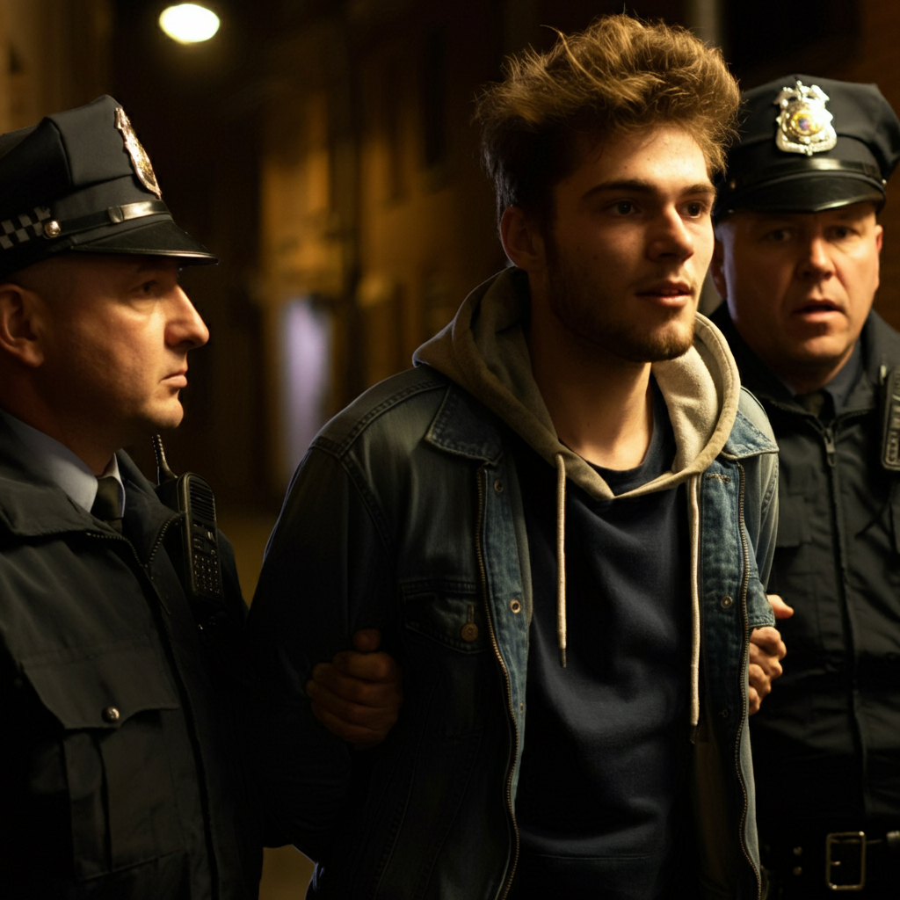

The Conclusion:
Image created with ImageFX
Detective Alvarez’s keen eye uncovers the inconsistencies in Julian’s story. The fingerprints on the wine glass, the security system footage, and the unexplained blood drop all lead back to him. When confronted, Julian crumbles, revealing that he had been planning this for months.
But there’s something chilling about Julian’s final words. "In the end, it was always going to be me," he says, a cold smile playing on his lips. His calm demeanor suggests he’s done this before—or perhaps, that he’s always been planning for it.
The "perfect" murder wasn't perfect at all—it was just a reflection of a man who had been waiting for the right moment to claim everything he felt was owed to him.